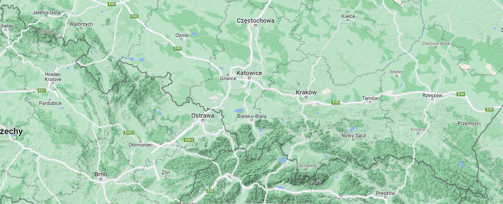

Strona o polskich górach
Geografia
Góry w Polsce znajdują się na południu kraju, wśród znajdujących się na terenie naszego kraju łańcuchów górskich możemy wymienić:Karpaty
W skład Karpat wchodzi 12 pasm, do popularniejsz:ych należą:- Tatry
- Pieniny
- Bieszczady
Sudety
W skład łańcucha sudeckiego wchodzi 15 pasm, w tym między innymi:- Karkonosze
- Góry Izerskie
- Góry Stołowe
- Masyw Śnieżnika
Góry Świętokrzyskie
Jest to chyba najmniej polularny łańcuch z polskich gór. W jego skład wchodzi 19 pasm. min:- Pasmo Klonowe
- Pasmo Orłowickie
- Pasmo Daleszydzkie
Góry na mapie
Chcesz się dowiedzieć co to za pasmo na mapie naszego kraju? Kliknij a się dowiesz!